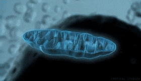
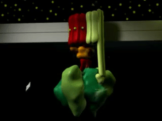

Glicólise: Série de dez reações químicas que fragmentam a glicose originando no final do processo duas moléculas de piruvato (C₃H₄O₃): . Ocorre no citoplasma.
Ciclo de Krebs ou do ácido cítrico: Ciclo que envolve oito reações químicas que completam a quebra metabólica da glicose. Ocorre no interior das mitocôndrias.
Fosforilação oxidativa: Produção de ATP usando a energia derivada de reações redox de uma cadeia transportadora de elétrons. Ocorre na membrana interna da mitocôndria.
Local aonde ocorre a passagem de prótons do espaço intermembrana para a matriz mitocondrial produzindo ATP devido as diferenças de gradiente de concentração maior no espaço intermembrana. O componente F₀ está incrustrado na membrana interna da mitocôndria enquanto que o componente F₁ está na matriz mitocondrial.
Animação 